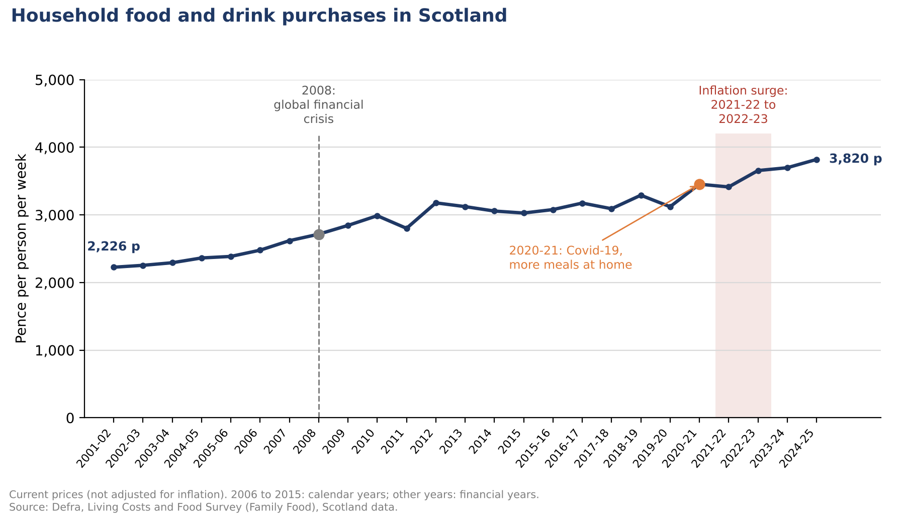
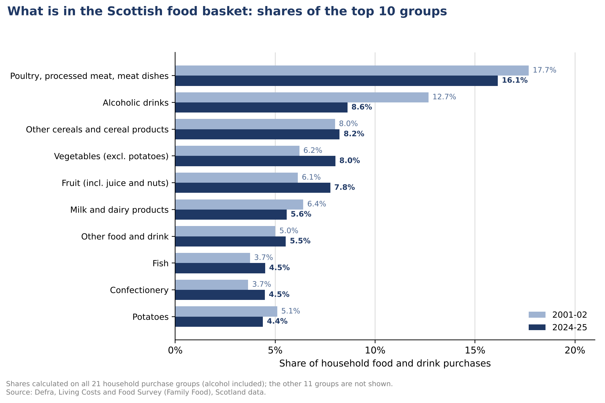

Few of us will forget 2020. Restaurants closed, takeaways went quiet and our kitchens became the centre of daily life. In Scotland, spending on eating out fell from 1,093p per person per week in 2019-20 to just 247p in 2020-21.
But Covid is only one chapter. So how have food purchases in Scottish households evolved between 2001 and 2025?
More money, mostly spent at home
In 2001-02, the average Scot spent 2,226p a week on food and drink for the home. By 2024-25, that had reached 3,820p: a rise of 72%. Figure 1 shows the trend. The grey line marks the 2008 financial crisis, the orange dot marks Covid and the red band marks the inflation surge of 2021-22 to 2022-23. These are cash figures: part of the rise is simply higher prices.

A basket with less alcohol and more fruit and veg
Figure 2 compares each group's share of the basket in 2001-02 and 2024-25. Meat products remain the biggest item, but slip from 17.7% to 16.1%. Alcohol comes second and falls from 12.7% to 8.6%, even though we spend more on it in cash terms. Fruit rises from 6.1% to 7.8% and vegetables from 6.2% to 8.0%.

Four products, four stories
Four products show how our habits are shifting. Choose a product and a start year in Figure 3 to explore them. Hover over the line to see each year, or click a point to read more.